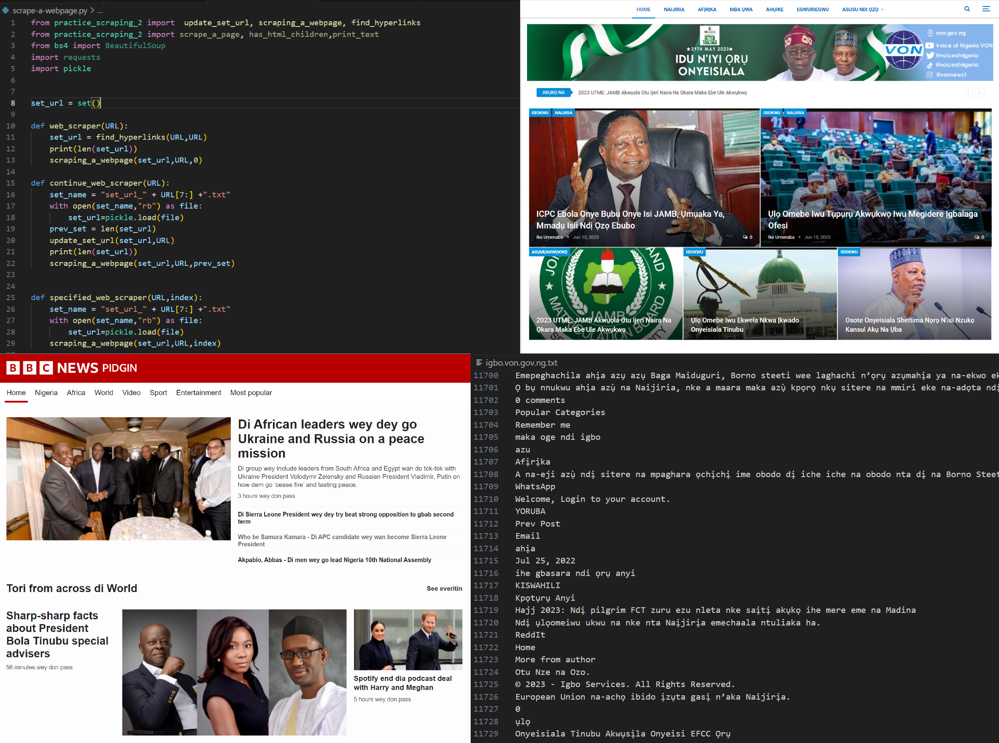
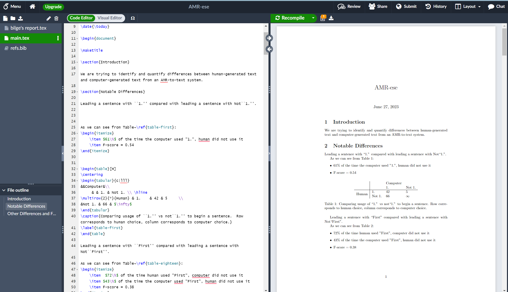

Work & Research

Research Assistant
- Fine-tuned preexisting translation models using the self-researched and curated datasets in Igbo and Nigerian Pidgin; currently working to improve translation models’ translation accuracy from these Nigerian languages to English.
- Developed machine-readable datasets as valuable resources for developers working on Natural Language Processing tools for Igbo and Nigerian Pidgin, addressing the challenges faced by these under-resourced African languages.
- Implemented a web scraper using the "BeautifulSoup" Python library and concurrent programming techniques, extracting over 2,000,000 text data from reputable sources such as BBC and TedTalk.
- Preprocessed and analyzed the dataset, resulting in 116,884 Igbo sentences and 121,266 Nigerian Pidgin sentences; applied the ChatGPT API to annotate approximately 70,000 sentences.

Research Assistant
- Enhanced the text-generation capabilities of AMR-system, making its output to be more human-like
- Employed Python and Jupiter Notebook to identify the differences between 58000+ computer-generated and human-generated sentences and helped automate the testing of these differences over large datasets
- Utilized Python and Jupyter Notebook to identify the differences between 58000+ computer-generated and human-generated sentences and helped automate the testing of these differences over large datasets
- Suggested learning sarcasm and mathematical expressions to enhance the AMR-system; co-authored a 12-page research report